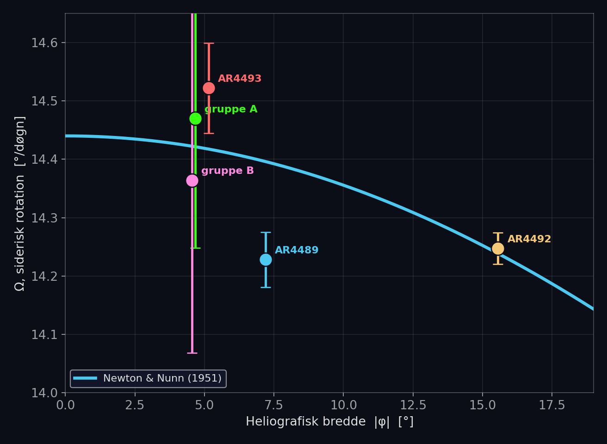
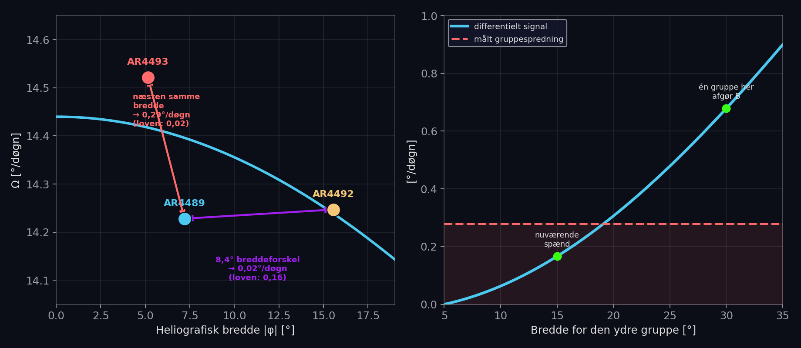
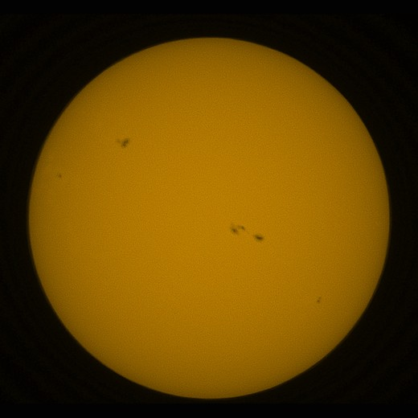
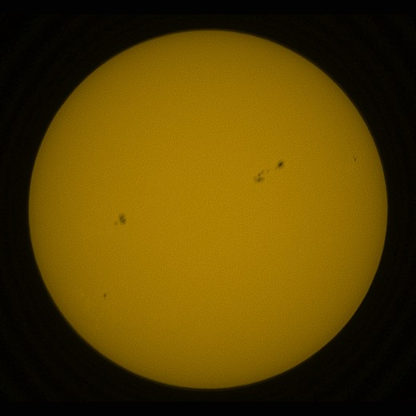
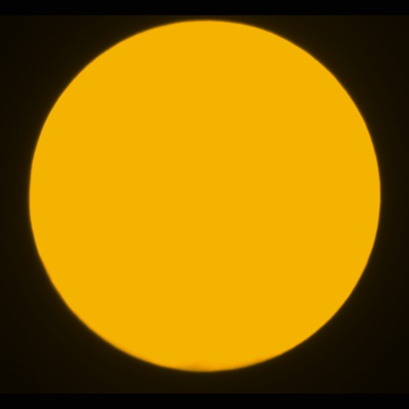
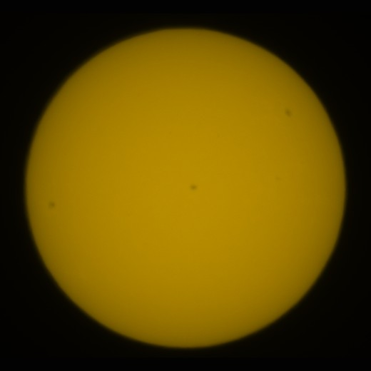
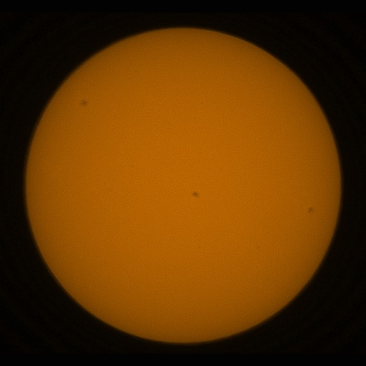
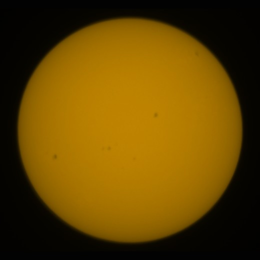

Solen roterer ikke som en fast kugle. Det vidste man allerede i 1630'erne, da de første observatører fulgte solpletter hen over skiven og opdagede, at pletter nær ækvator når rundt om Solen hurtigere end pletter længere mod polerne — et af de tidligste beviser på, at Solen er en flydende plasmakugle. At måle det selv, med et forbrugerteleskop fra en baghave i Danmark, lød som en overkommelig sommerferieopgave. Det blev til halvanden måneds daglige billeder, fem selvopdagede fejl, og et resultat der både lykkedes og ikke lykkedes.
Spørgsmålet og udstyret
Udstyret er et Unistellar eVscope2, et 11,4 cm katadioptrisk teleskop med indbygget solfilter og automatisk billedstakning — ikke et forskningsinstrument, men skarpt nok til at vise solpletter tydeligt på en hvidlys-solskive.
Spørgsmålet var konkret: kan man, ud fra en serie billeder over nogle uger, genmåle den klassiske sammenhæng mellem solpletternes rotationshastighed Ω og deres heliografiske bredde φ, først kortlagt af Newton og Nunn i 1951 ud fra tusindvis af professionelle pletmålinger?
A er rotationen ved selve ækvator; B beskriver, hvor meget langsommere rotationen bliver mod polerne — selve differentialrotationen, drivkraften bag Solens magnetfelt.
Fra billede til breddegrad
Hvert billede viser en flad skive med et par mørke pletter. Solens rotationsakse er ikke lodret i billedet — kameraets orientering mod himlen skifter time for time, fordi eVscope2 sidder på en alt-azimutal montering uden derotator. Vinklen kaldes den parallaktiske vinkel:
Med q kendt kan billedet drejes tilbage, så Solens egen akse peger lodret op. Herfra er det ren projektionsgeometri: en plet, målt som afstand fra skivecentrum, løftes til en kugleflade og roteres ind i det heliografiske koordinatsystem — ud kommer breddegrad og længdegrad. Lægges Solens kendte stive rotationsrate (Carringtons konstant, 14,1844°/døgn) til, giver driften i pletternes længdegrad, dag for dag, selve den rotation, man leder efter.
Hele kæden er valideret uafhængigt mod NOAA/USAF's daglige Solar Region Summary: 43 breddemålinger matchede de officielle positioner til en spredning på 0,7° — uden en eneste tilpasset fri parameter i geometrien.
Fem gange forkert, før det blev rigtigt
Den mest lærerige del af forløbet var ikke fysikken, men fejlene, der undervejs så ud som fysik og viste sig at være teknik.
Tidszonen
eVscope2 skriver tidsstemplet i filnavnet i UTC, ikke lokal tid. Fejlen — to timer i sommertid — blev ikke opdaget i fem udgaver af den løbende statusrapport, fordi rullevinklen blev tilpasset for hvert billede og lydløst opslugte fejlen. Da tiden blev rettet, viste instrumentet sig at have intet målbart rul overhovedet.
Randproblemet
Nær solskivens rand komprimerer projektionen længdegraderne kraftigt. Løsningen var først at kassere alle randnære målinger — men projektionen er matematisk eksakt invertibel; problemet er ikke geometrien, men at randnære målinger er mindre præcise, ikke forkerte. Den rigtige behandling er at vægte hver måling efter sin præcision, ikke sætte en hård grænse og smide data væk.
Randfinderen selv
En tærskelbaseret metode til at finde skivens rand brød sammen ved let skydække — og ved Unistellars annoterede billeder, hvor en tynd hvid ring blev fejllæst som selve solranden. En gradientbaseret randfinder, der leder efter det stejleste lysfald i stedet for et fast lysniveau, løste begge problemer på én gang.
Gruppematchning
To nye pletgrupper, kun 12° fra hinanden i længde, blev forvekslet af et for bredt søgevindue og gav en fysisk umulig rotationshastighed. Løsningen: gør søgevinduet smallere end afstanden mellem nabogrupper. Pointen sidder: et resultat, der strider mod al kendt fysik, er en grund til at lede efter en analysefejl — ikke en grund til straks at forkaste det som støj.
Fælles for fejlene: hver af dem så, indtil den blev fundet, ud som en interessant fysisk konklusion. Ingen af dem var det — og hver rettelse bragte resultatet tættere på den accepterede fysik, aldrig længere væk.
Resultatet: to svar, ikke ét
Den bedst fulgte gruppe, AR4492, blev sporet gennem otte hele døgn, 13 gange, ved en heliografisk bredde på 15,6°.

En anden, helt uafhængig gruppe ved 5° bredde gav samme gode overensstemmelse. Men koefficienten B — selve differentialrotationen — kunne ikke bestemmes:
Newton & Nunn (1951)
- Grundlag
- tusindvis af pletmålinger
- Tidsspand
- flere solcykler
- B
- 2,8°/døgn
Baghave-undersøgelsen
- Grundlag
- 5 pletgrupper
- Tidsspand
- 16 dage
- B
- 0,8 ± 0,7°/døgn
Hvorfor B undslap
Ikke en modsigelse af fysikken — en konsekvens af, hvad undersøgelsens grupper tilfældigvis lå ved. To grupper med 8,4° breddeforskel viste sig at rotere praktisk talt ens, mens to grupper ved næsten samme bredde afveg med hele 0,29°/døgn fra hinanden. Solpletgrupper er ikke perfekte mærker på plasmaets bevægelse; spredningen mellem grupper viste sig at være omkring 0,28°/døgn, målt uafhængigt tre gange.

Det tal er større end selve det signal, der skulle måles: over det breddespænd, undersøgelsens grupper faktisk dækkede (5° til 16°), forudsiger loven kun en forskel på 0,17°/døgn mellem yderpunkterne. Havde blot én gruppe ligget ved 25–30° bredde i stedet, ville en håndfuld grupper have været nok.
En plet der levede for kort
Den 29. juli fangede to uafhængige billeder, taget tre sekunder fra hinanden, en lille mørkning ved en heliografisk bredde på 37° — højere end noget andet set i undersøgelsen. Kernen var 4–5 % mørkere end baggrunden i begge billeder, et ægte og reproducerbart signal. Men på samme sted, fem timer tidligere samme dag og igen et døgn senere, var der intet at se.
Pletten var opstået og forsvundet igen inden for det tidsrum, én observatør kunne nå at fange den to gange.
Det er, hvad man må forvente af en efemer region — et lille, kortlivet magnetisk bipol, der aldrig udvikler sig til en nummereret aktiv region. Almindelige i solfysikken, men sjældent fanget så konkret af amatørudstyr.
Billedgalleri
Et udpluk af de rå eVscope2-optagelser, undersøgelsen bygger på.






Perspektiv
To ting adskiller dette fra en fiasko. For det første: hver af de fem fejl, der undervejs blev fundet og rettet, bragte resultatet tættere på den accepterede fysik — selve kendetegnet på en reel fejl frem for en tilpasning til et ønsket svar. For det andet: undersøgelsen ved nu præcist, hvad der mangler. Ikke mere data af samme slags, men én solpletgruppe ved en anden bredde. Solcyklus 25 er på vej ned, men de første grupper fra cyklus 26 vil med stor sandsynlighed dukke op netop ved 25–30° bredde. Teleskopet er stadig rettet mod Solen hver klare dag.